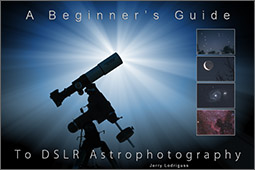
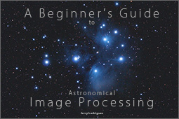
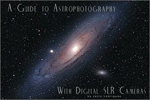
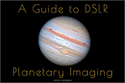
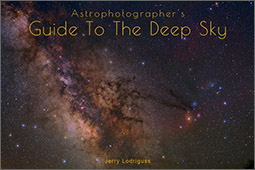

Get started in basic astrophotography of the night sky.
Learn More

Learn DeepSkyStacker and Photoshop for image processing. New!
Learn More

Take your long-exposure deep-sky images to the next level.
Learn More

Shoot high-resolution images of the sun, moon and planets.
Learn More

Learn what to shoot with this atlas of celestial splendors.
Learn More